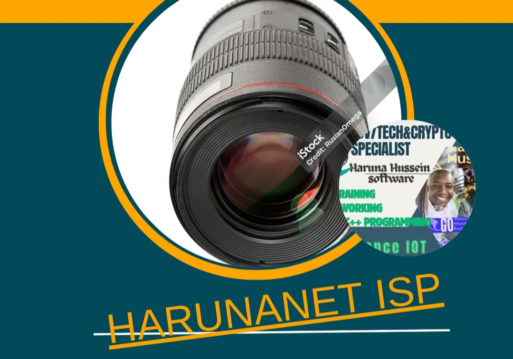

<!DOCTYPE html>
<html lang="sw">
<head>
  <meta charset="UTF-8" />
  <meta name="viewport" content="width=device-width, initial-scale=1.0"/>
  <title>Mtambuzi wa Hisia - Haruna AI</title>
  <link rel="icon" href="Haruna.jpg" type="image/jpg">
  <style>
    body {
      margin: 0;
      font-family: 'Poppins', sans-serif;
      background: linear-gradient(to bottom, #0077be, #00c6ff); /* blue bahari */
      color: white;
      text-align: center;
    }

    header {
      background: url('Intel1.jpg') no-repeat center center/cover;
      height: 300px;
      position: relative;
      display: flex;
      align-items: center;
      justify-content: space-between;
      padding: 20px;
    }

    .logo-container {
      perspective: 1000px;
    }

    .logo-flip {
      width: 100px;
      height: 100px;
      border-radius: 50%;
      border: 3px solid white;
      object-fit: cover;
      transition: transform 0.8s;
      transform-style: preserve-3d;
    }

    .logo-container:hover .logo-flip {
      transform: rotateY(180deg);
    }

    .header-text {
      text-align: left;
      color: orange;
    }

    .header-text h1 {
      margin: 0;
      font-size: 24px;
      color: orange;
    }

    .header-text p {
      margin: 5px 0 0;
      font-size: 16px;
      color: white;
    }

    .scanner-section {
      text-align: center;
      padding: 40px 20px;
    }

    .scanner-section h2 {
      color: #fff;
    }

    #videoContainer {
      margin-top: 20px;
      position: relative;
      width: 300px;
      height: 300px;
      margin-left: auto;
      margin-right: auto;
      border-radius: 50%;
      overflow: hidden;
      border: 5px solid #fff;
      box-shadow: 0 0 15px rgba(0,0,0,0.3);
    }

    video {
      width: 100%;
      height: 100%;
      object-fit: cover;
    }

    button {
      margin-top: 20px;
      padding: 10px 20px;
      background-color: #004d80;
      color: white;
      border: none;
      border-radius: 10px;
      cursor: pointer;
      font-size: 16px;
      font-weight: bold;
      box-shadow: 0 0 10px rgba(0,0,0,0.2);
    }

    footer {
      text-align: center;
      padding: 20px;
      background-color: #004d80;
      color: white;
      margin-top: 50px;
    }
  </style>
</head>
<body>
      
</html>

  <header>
    <div class="header-text">
      <h1>WELCOME TO HARUNA AI</h1>
      <p>Mtambuzi wa Hisia kwa Kamera</p>
    </div>
    <div class="logo-container">
      
    </div>
  </header>

  <section class="scanner-section">
    <h2>Bofya Anza Scan ya Uso</h2>
<!-- KITIFE CHA MAELEZO -->
<style>
  .toggle-button {
    background-color: #00cc66;
    color: white;
    padding: 10px 20px;
    border: none;
    border-radius: 8px;
    cursor: pointer;
    font-weight: bold;
    margin-bottom: 20px;
    box-shadow: 0 0 10px rgba(0,0,0,0.2);
  }

  .info-box {
    display: none;
    background-color: #ffffff;
    color: #333;
    border-left: 6px solid #00cc66;
    padding: 20px;
    margin: 20px auto;
    max-width: 500px;
    border-radius: 10px;
    box-shadow: 0 0 10px rgba(0,0,0,0.1);
    text-align: left;
    font-size: 15px;
    animation: slideDown 0.4s ease-out;
  }

  @keyframes slideDown {
    from { opacity: 0; transform: translateY(-10px); }
    to { opacity: 1; transform: translateY(0); }
  }
</style>

<button class="toggle-button" onclick="toggleInfo()">Safi! Maelezo kuhusu Anza Scan</button>

<div class="info-box" id="infoBox">
  <h3>🛈 Jinsi ya Kuwasha Kamera</h3>
  <ol>
    <li>Fungua Chrome kabla ya kuanza Scan.</li>
    <li>Juu kulia kwenye browser, bonyeza alama ya duara yenye herufi <b>“i”</b>.</li>
    <li>Itakupeleka kwenye sehemu ya ruhusa (permissions).</li>
    <li>Chini ya kamera, chagua <b>“Allow”</b> au <b>“Ruhusu”</b>.</li>
    <li>Rudi hapa na bonyeza “Anza Scan”.</li>
    <li>Elekeza kamera vizuri usawa wa uso wako. Hakikisha simu au laptop haitikisiki.</li>
    <li>Utaweza kupata ushauri sahihi wa hali yako.</li>
    <li><b>Anza sasa na Karibu HarunaNet ISP</b> 📡</li>
  </ol>
</div>

<script>
  function toggleInfo() {
    const box = document.getElementById('infoBox');
    box.style.display = box.style.display === 'none' || box.style.display === '' ? 'block' : 'none';
  }

  document.addEventListener('click', function(e) {
    const box = document.getElementById('infoBox');
    const button = document.querySelector('.toggle-button');
    if (!box.contains(e.target) && !button.contains(e.target)) {
      box.style.display = 'none';
    }
  });
</script>
<div id="videoContainer">
  <div class="camera-overlay" id="cameraOverlay">
    
  </div>
  <video id="video" autoplay playsinline></video>
</div>

<button onclick="startCamera()" class="scan-button">Anza Scan Uso</button>

<style>
#karatasi {
  display: none;
  position: absolute;
  bottom: 60px;
  right: 0;
  width: 300px;
  background: #ffffff;
  border: 2px solid #ccc;
  padding: 15px;
  border-radius: 10px;
  box-shadow: 0 4px 10px rgba(0,0,0,0.2);
  animation: slideDown 0.3s ease;
}

@keyframes slideDown {
  from { transform: translateY(-20px); opacity:0; }
  to { transform: translateY(0); opacity:1; }
}
  #videoContainer {
    position: relative;
    width: 280px;
    height: 280px;
    margin: 20px auto;
    border-radius: 50%;
    overflow: hidden;
    background: #000;
    box-shadow: 0 0 15px rgba(0,0,0,0.5);
  }

  #video {
    width: 100%;
    height: 100%;
    object-fit: cover;
  }

  .camera-overlay {
    position: absolute;
    top: 0;
    left: 0;
    width: 100%;
    height: 100%;
    border-radius: 50%;
    background-color: rgba(0,0,0,0.4);
    display: flex;
    align-items: center;
    justify-content: center;
    z-index: 2;
  }

  .camera-icon {
    width: 80px;
    height: 80px;
    border-radius: 50%;
    opacity: 0.85;
    transition: opacity 0.3s ease;
  }

  .camera-overlay.hidden {
    display: none;
  }

  .scan-button {
    display: block;
    margin: 10px auto;
    padding: 10px 20px;
    background-color: orange;
    color: white;
    font-size: 16px;
    font-weight: bold;
    border: none;
    border-radius: 25px;
    cursor: pointer;
    box-shadow: 0 0 8px rgba(0,0,0,0.3);
    transition: background 0.3s ease;
  }

  .scan-button:hover {
    background-color: darkorange;
  }
</style>

<script>
  function startCamera() {
    const video = document.getElementById('video');
    const overlay = document.getElementById('cameraOverlay');

    if (navigator.mediaDevices && navigator.mediaDevices.getUserMedia) {
      navigator.mediaDevices.getUserMedia({ video: true })
        .then(function(stream) {
          video.srcObject = stream;
          video.play();
          overlay.classList.add('hidden');
        })
        .catch(function(err) {
          alert("Kamera haikufunguka: " + err);
        });
    } else {
      alert("Kifaa chako hakiungi mkono kamera.");
    }
  }
</script>  
</body><!-- Kamera Video Preview -->
<video id="video" width="100%" height="300" autoplay style="border-radius: 10px;"></video>

<!-- Kitufe cha Scan -->
<button id="startScanBtn" style="margin-top: 15px; padding: 10px 20px; background: orange; border: none; border-radius: 5px;">Anza Scan</button>

<!-- Kitufe cha Matokeo (huonekana baada ya scan tu) -->
<button id="showResultsBtn" style="margin-top: 10px; padding: 10px 20px; background: green; color: white; border: none; border-radius: 5px; display: none;">Matokeo</button>

<!-- Kijikaratasi cha Majibu -->
<div id="karatasi" style="display: none; position: relative; width: 300px; background: #e0ffe0; border: 2px solid #88cc88; padding: 20px; border-radius: 12px; margin-top: 20px; animation: slideUp 0.4s ease;">
  <button onclick="copyResults()" style="position: absolute; top: 10px; right: 10px; background: white; border: 1px solid #ccc; border-radius: 3px; padding: 4px 8px;">Copy</button>
  <div id="resultsContent">
    <p><strong>Jina:</strong> Haruna Hussein</p>
    <p><strong>Uso:</strong> Umetambuliwa ✅</p>
    <p><strong>Alama ya Tabasamu:</strong> 92%</p>
  </div>
</div>

<!-- JavaScript -->
<script>
  const video = document.getElementById('video');
  const startBtn = document.getElementById('startScanBtn');
  const showBtn = document.getElementById('showResultsBtn');
  const karatasi = document.getElementById('karatasi');
  const resultsContent = document.getElementById('resultsContent');

  // Washa kamera
  navigator.mediaDevices.getUserMedia({ video: true })
    .then(stream => video.srcObject = stream)
    .catch(err => console.error("Kamera haikupatikana", err));

  let scanDone = false;

  startBtn.addEventListener('click', () => {
    karatasi.style.display = "none";
    showBtn.style.display = "none";
    scanDone = false;
    startBtn.innerText = "Inascan...";
    
    setTimeout(() => {
      scanDone = true;
      startBtn.innerText = "Scan Imefanikiwa ✅";
      showBtn.style.display = "inline-block";
    }, 5000); // Sekunde 5
  });

  showBtn.addEventListener('click', () => {
    if (scanDone) {
      resultsContent.innerHTML = `
        <p><strong>Jina:</strong> Haruna Hussein</p>
        <p><strong>Uso:</strong> Umetambuliwa ✅</p>
        <p><strong>Alama ya Tabasamu:</strong> 92%</p>
      `;
    } else {
      resultsContent.innerHTML = `<p>⚠️ Hakuna Scan Iliyofanyika</p>`;
    }
    karatasi.style.display = "block";
  });

  function copyResults() {
    const text = resultsContent.innerText;
    navigator.clipboard.writeText(text).then(() => {
      alert("📋 Umenakili matokeo yako!");
      karatasi.style.display = "none";
    });
  }
</script>

<!-- Animation -->
<style>
@keyframes slideUp {
  from { transform: translateY(20px); opacity: 0; }
  to { transform: translateY(0); opacity: 1; }
}
</style>
</script>
 
</html>
